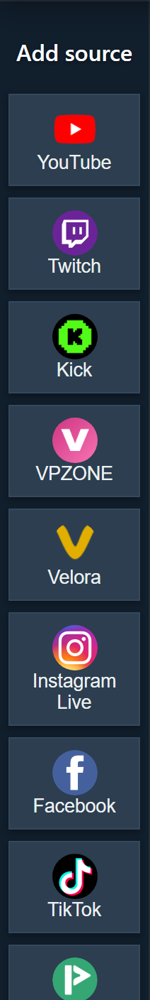

앱의 용도
데스크톱 앱은 일반 브라우저 밖에서 Social Stream 소스 창을 관리합니다. 소스 정리와 일부 브라우저 탭 성능 제한 문제에 도움이 될 수 있습니다. Chrome과 같지 않으며 Chrome 로그인이나 쿠키를 자동으로 공유하지 않습니다.

모드 이름
일부 소스에는 연결 모드가 여러 개 있습니다. 적합한 모드는 플랫폼, 로그인 상태, 풍부한 이벤트가 필요한지 간단한 페이지 캡처가 필요한지에 따라 다릅니다.

| 모드 | 쉬운 설명 | 사용할 때 |
|---|---|---|
| 표준 (Standard) | 앱이 일반 플랫폼/소스 페이지를 열고 렌더링된 페이지를 읽습니다. | 가장 간단한 보이는 페이지 캡처, 로그인 또는 수동 확인이 필요한 경우. |
| WebSocket/API | 소스가 플랫폼 API, 소켓 또는 Social Stream 소스 페이지를 통해 연결합니다. | 플랫폼이 지원하며 더 안정적인 백그라운드 작동이나 풍부한 이벤트 데이터를 원하는 경우. |
| 폴링/레거시 | 권장 실시간 소켓 경로 대신 업데이트를 확인하는 호환 방식입니다. | 새 연결 도구가 실패하거나 플랫폼별 대체 방식이 필요한 경우. |
| TikTok 자동 (Auto) | 앱이 가장 적합한 TikTok 방식을 선택하며 하나가 실패하면 대체 방식으로 전환할 수 있습니다. | 어떤 TikTok 모드를 사용할지 모르는 경우. |
표준 모드를 사용할 때
- 라이브 페이지나 팝아웃 채팅이 보일 때 플랫폼이 작동하는 경우.
- 사이트에서 로그인, 확인 절차 해결 또는 채팅 패널을 보이게 열어 두기를 요구하는 경우.
- 앱 동작을 Chrome 확장 프로그램과 비교하는 경우.
- 페이지 열기, 채팅 확인, 도크 테스트, OBS 순서의 가장 익숙한 문제 해결 방식을 원하는 경우.
플랫폼이 페이지 구조를 변경하거나 내장/앱 브라우저를 차단하거나 CAPTCHA를 요구하거나 로그인을 해야 채팅을 보여 주면 표준 모드도 실패할 수 있습니다.
WebSocket 또는 API 모드를 사용할 때
- 소스가 WebSocket/API 모드를 명시적으로 지원하는 경우.
- 백그라운드에서도 더 잘 작동하는 소스를 원하는 경우.
- 일반 페이지 스크래핑으로 제공되지 않을 수 있는 이벤트 종류가 필요한 경우.
- 제공업체 토큰, 계정 권한, API 범위 또는 소스 페이지 설정을 처리할 수 있는 경우.
WebSocket/API 모드가 항상 더 좋은 것은 아닙니다. 인증, 토큰, 제공업체 접근 또는 플랫폼 API에 문제가 있다면 표준 모드로 더 빠르게 시험할 수 있습니다.
앱의 TikTok
데스크톱 앱의 TikTok은 단일 모드가 아닙니다. 문제 해결 전에 항상 어떤 프리셋이 활성화되어 있는지 기록하세요.
| TikTok 연결 방식 | 사용 사례 | 흔한 실패 지점 |
|---|---|---|
| 자동 | 대부분의 사용자가 먼저 시도할 방식. | 앱이 대체 방식으로 전환할 수 있으므로 상태 문구를 확인하세요. |
| 표준 (Standard) | 보이는 TikTok 페이지 캡처. | 로그인, CAPTCHA, 리디렉션된 페이지 또는 숨겨진 채팅. |
| 로컬 서명기 (Local Signer) | 앱 네이티브 읽기 및 답장 지원 경로입니다. | 앱의 TikTok 세션/쿠키가 유효해야 합니다. |
| 폴링/호환성 | 소켓/서명 경로가 실패할 때의 대체 방식. | 권장 연결 도구보다 정보가 적습니다. |
| 프록시 또는 사용자 지정 서명 | 고급 설정. | 제공업체 사용 가능 여부, API 키, 방 ID 또는 요청 제한. |
일반적인 첫 시도에서는 TikTok을 추가하고 프리셋을 Auto로 둔 채 소스를 활성화하여 앱 상태 문구를 확인하세요.
OBS 전에 확인할 사항
- 앱 소스가 활성화되어 있는지 확인하세요.
- 플랫폼에 로그인이 필요하면 소스 창에서 로그인했는지 확인하세요.
- 같은 세션 ID로 도크가 채팅을 받는지 확인하세요.
- 도크가 작동한 뒤에만 OBS 오버레이 URL을 추가하거나 새로고침하세요.
- Chrome에서는 되지만 앱에서는 안 된다면 앱 세션과 Chrome 세션이 별개임을 기억하세요.
일반적인 해결 방법
- Chrome에는 로그인했지만 앱에는 로그인되지 않음: 앱 소스 창 안에서 플랫폼에 로그인하거나 확장 프로그램으로 캡처하세요.
- 소스는 활성 상태지만 채팅이 오지 않음: 모드, 소스 창, 라이브 URL/사용자 이름, 도크 세션을 확인하세요.
- 앱이 잘못된 소스 파일을 사용함: 앱이 내장, 캐시, 원격, 베타, 안정 버전 또는 로컬 Social Stream 리소스 중 무엇을 사용하는지 확인하세요.
- TikTok이 작동하지 않음: 현재 프리셋, 상태 문구, 앱 버전, 소스의 대체 모드 전환 여부를 기록하세요.
- OBS가 비어 있음: 먼저 도크를 시험하세요. 도크가 비어 있다면 아직 OBS의 문제가 아닙니다.
관련 가이드: 플랫폼 설정 선택기.